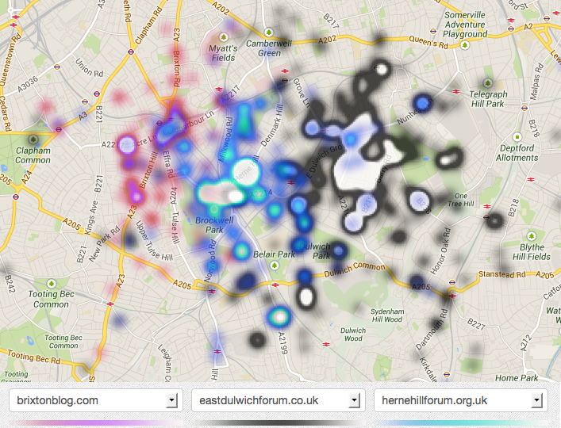
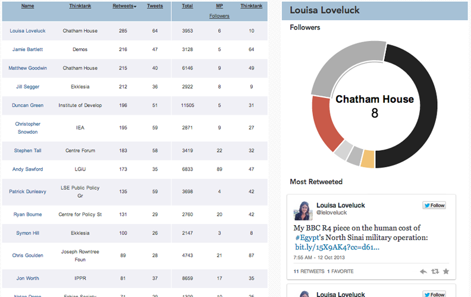
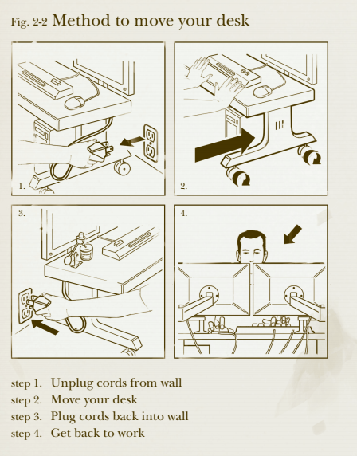

How can digital interfaces help people meet and
collaborate
Systems that:
- Build or reinforce social ties
- Go beyond screen-based interfaces
- Place information found on the web in new contexts
Interfaces designed for collaboration

Vitamin Design Lego Calendar

Heresay & Little Printer
With Mark Simpkins at Central Saint Martins

Mapping hyperlocal forums
Social Mirror
RSA / Civic Media Centre

Process
Wonkbook.io

- Open brief
- Many iterations
- Creatively responding to the data
- Database design intrinsically linked to visual design
Wikipedia book of the dead
| Dolan index | Hybrid measure |
| Pope John Paul II | Michael Jackson |
| Michael Jackson | Jesus |
| John F. Kennedy | Ronald Reagan |
| Gerald Ford | Jimi Hendrix |
| Mircea Eliade | Abraham Lincoln |
| Peter Jennings | Adolf Hitler |
| John Lennon | Albert Einstein |
| Adolf Hitler | William Shakespeare |
| Harry S. Truman | Charles Darwin |
| Ronald Reagan | Oscar Wilde |
| J. R. R. Tolkien | Woodrow Wilson |
| James Brown | Isaac Newton |
- Editorialising new tech
- Graph theory
- Knowledge of data sources
Literature Interests
- Graph theory - Albert-László Barabási
- Sociology of the workplace - Richard Sennet
- Economics of liquid organisations - Yanis Varoufakis
- Social capital - Pierre Bourdieu (via Mike Savage)
- Deliberative Democracy - James S. Fishkin
Steam - Yanis Varoufakis
Methodology - examples
- Hub Westminster Twitter treatment
- Sonic expression of digital infrastructure in an office space
Timing
- Why now for me
- Why now, generally
- The opportunity I see in current projects